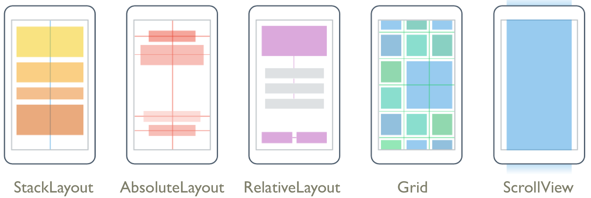
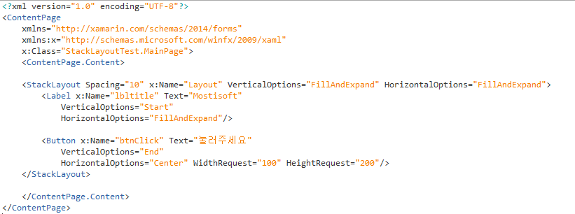
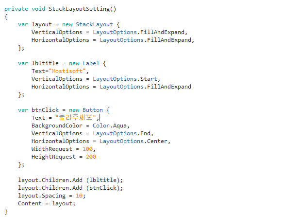
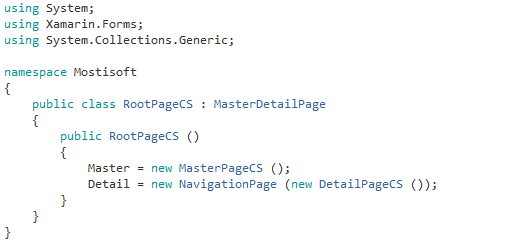
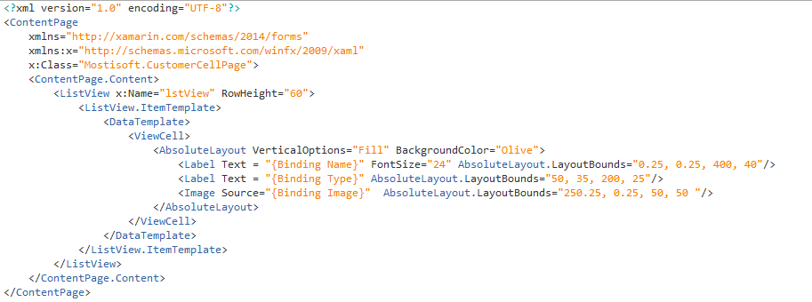

Hello Xamarin
Created by OhSeKwang Mostisoft. Alt + click anywhere to zoom back out.
Xamarin 소개
C# 코드 베이스를 사용하여 네이티브 iOS, Android 및 Windows 앱 빌드
- C#을 사용하여 모바일로 이동
- iOS, Android 및 Windows를 대상으로 지정
- 보기 좋은 네이티브 사용자 환경 디자인
- 전체 기본 성능 달성
- 핵심 플랫폼 API 사용
- 편리한 빌드 및 테스트 도구
- Azure 서비스와 쉽게 연결

모든 플랫폼 대상 지정
- iOS, Android 및 Windows에 대한 단일 공유 코드 베이스
- C# 코드를 사용하여 iOS, Android, Windows, Mac
등 모든 플랫폼 대한 모바일 앱을 빠르게 빌드 - 각 플랫폼에 대한 기본 사용자 지정 사용자 인터페이스를 빌드하거나
Xamarin.Forms를 사용하여 플랫폼 전반에 걸쳐
단일의 공유 사용자 인터페이스를 작성
Visual Studio 사용
기본 성능 고유하게 컴파일된 앱
- 성능이 손상되지 않음
- 네이티브 코드에 컴파일되며
각 장치에서 최적화된 성능을 제공하기 위해
플랫폼별 하드웨어 가속화를 활용

모바일 장치 API의 100%에 액세스

- NET API 이외에 각 플랫폼에 대한 100% 네이티브 코어 API에 직접 액세스하여 C#으로 플랫폼별 환경을 구축
- 플랫폼 API의 100%를 사용하므로 제한이 없습
Azure를 사용하여 연결

- Azure 모바일 서비스와 빠르게 통합하여 구성
- 앱에서는 클라우드의 데이터 저장소, 고객 인증, 푸시 알림, 오프라인 동기화 등과 같은 다양한 서비스를 활용
자마린을 사용해야 하는 5가지 이유
1. Less to learn
2. No limits
3. Faster time-to-market
4. Fewer bugs
5. Readiness for the future
Xamarin Pricing

개발환경 구성


Emulator 환경구성
Android
- Android Emulator에 느린 속도를 회피하기 위해서 지니모션 사용
IOS
- 추후 업데이트 예정...
지니모션 환경구성


Xamarin.Forms
0. XAML 시작하기
1. Hello, Xamarin.Forms
2. User Interface
3. Templating
4. Platform Features
5. Custom Renderers
6. DependencyService
7. MessagingCenter
8. Web Services
9. Advanced Topics
10. Deployment, Testing, and Metrics
11. Troubleshooting
XAML 기본 내용
1. XAML 시작하기
2. 필수 XAML 구문
3. XAML 태그 확장
4. 데이터 바인딩 기본 사항
1. XAML 시작하기
요소와 속성을 가진 페이지를 정의
Xamarin.Forms 애플리케이션에서는 대부분 XAML 페이지의 내용을 시각적으로 정의하는 데 사용됩니다. XAML 파일은 항상 마크 업 코드 지원을 제공하는 C # 코드 파일과 연관됩니다. 이 두 파일은 아이뷰 및 재산 초기화를 포함하는 새로운 클래스 정의를 포함합니다.. XAML 파일 내에서 클래스와 속성은 XML 요소와 속성을 참조하고, 마크 업 및 코드 사이의 링크가 설정됩니다.
1. XAML 시작하기
솔루션 만들기
자마린 스튜디오, 선택 메뉴에서 파일> 새로 만들기> 솔루션 > Cross-Platform > APP > Xarmin.Forms.App 선택
1. XAML 시작하기
솔루션 만들기
자마린 스튜디오, 선택 메뉴에서 파일> 새로 만들기> 솔루션 > Cross-Platform > APP > Xarmin.Forms.App 선택
1. XAML 시작하기
솔루션 만들기
Next 선택
1. XAML 시작하기
페이지 만들기
XAML 샘플 프로젝트를 마우스 오른쪽 단추로 클릭> 추가> 새파일> Forms ContentPage Xaml 선택
1. XAML 시작하기
XAML 클래스
두네임스페이스(xmlns)는 별도의 기능은 없고 버전을 표시하는데 사용합니다.
X 접두사가 선언 직후, 해당 접두어는 클래스라는 속성에 사용됩니다
X:XamlSamples 네임스페이스의 HelloXamlPage 클래스를 의미 합니다.
1. XAML 시작하기
App 실행페이지 선택
HelloXamlPage의 인스턴스로 MainPage을 설정을하면 App의 시작페이지를 선택할수 있습니다.
2. 필수 XAML 구문
Property Elements
XML 속성으로 XAML에서 클래스의 속성은 일반적으로 설정됩니다.
2. 필수 XAML 구문
Property Elements
새로운 태그의 콘텐츠와 속성 값을 설정합니다.
2. 필수 XAML 구문
Property Elements
텍스트 색상 속성을 지정하려면 다음 두 가지 방법으로 기능적으로 동일하지만 효과적으로 두 배의 속성을 설정 될 수 있기 때문에 동일한 속성에 대해 두 가지 방법을 사용할 수 없습니다.
라벨은 오브젝트 요소입니다. 라벨은 XML요소로 표현 Xamarin.Forms 객체입니다.
텍스트, 수직 옵션, 글꼴 속성 및 폰트 크기 속성의 속성입니다. XML 속성으로 표현 Xamarin.Forms의 속성입니다.
마지막 구문의 텍스트 색상 속성 요소가되고있다. 그것은 Xamarin.Forms 특성이지만 XML 엘리먼트로 표현 됩니다.
property 요소의 정의는 처음에는 XML 문법을 위반하는 것으로 보일 수 있지만, XML에서 특별한 의미가 없습니다. Label.Text 색상은 단순히 정상적인 자식 요소입니다.
2. 필수 XAML 구문
Grid
그리드는 두 가지 속성의 RowDefinitions 및 ColumnDefinitions 있습니다.
RowDefinitions : 행을 지정할수 있는 속성
ColumnDefinitions : 열을 지정할수 있는 속성
2. 필수 XAML 구문
OnPlatform
아이폰에 상태 표시 줄을 중복 방지하기 위해 사용하고 특정 Platform 속성을 정의 합니다.
2. 필수 XAML 구문
Attached Properties(첨부속성)
그리드는 행과 열을 정의하는 RowDefinitions, ColumnDefinitions 컬렉션에 대한 속성 요소를 필요로합니다. 또한 그리드의 각각의 자식이 있는 행 및 열을 나타내는 방법이 있어야 합니다.
그리드의 자식의 대한 태그 내에서 다음과 같은 속성을 사용하여 행과 열을 지정합니다.
Grid.RowSpan, Grid.ColumnSpan이 두 속성은 하나의 기본 값을 가져야 합니다.
3. XAML 태그 확장
Shared Resources(공유 자원)
XAML에서는 ResourceDictionary에 속성값을 저장해서 사용합니다.
4. 데이터 바인딩 기본 사항
View-to-View Bindings
데이터 바인딩은 같은 페이지에 두 개의 뷰의 속성을 연결 정의 할 수 있습니다. 참조 태그 확장 :이 경우 X를 사용하여 대상 개체의 BindingContext를 설정합니다.
4. 데이터 바인딩 기본 사항
Backwards Bindings
Hello, Xamarin.Forms Quickstart

Hello, Xamarin.Forms Quickstart
Hello, Xamarin.Forms Quickstart

Hello, Xamarin.Forms Quickstart

Hello, Xamarin.Forms Quickstart

Hello, Xamarin.Forms Quickstart

Hello, Xamarin.Forms Quickstart
Hello, Xamarin.Forms Quickstart

Hello, Xamarin.Forms Quickstart
Hello, Xamarin.Forms Quickstart

Hello, Xamarin.Forms Quickstart
Hello, Xamarin.Forms Quickstart
Hello, Xamarin.Forms Quickstart
Hello, Xamarin.Forms Quickstart
Hello, Xamarin.Forms Quickstart
Hello, Xamarin.Forms Quickstart
Hello, Xamarin.Forms Quickstart
Hello, Xamarin.Forms Quickstart
Hello, Xamarin.Forms Quickstart

Hello, Xamarin.Forms Quickstart
Phoneword Demo App
User Interface ▶ Layouts
User Interface ▶ Layouts ▶ StackLayout
가로 또는 세로 방향으로 지정할 수 있는 단일 선에 따라 자식 요소를 정렬합니다.
User Interface ▶ Layouts ▶ StackLayout
User Interface ▶ Layouts ▶ StackLayout
User Interface ▶ Layouts ▶ AbsoluteLayout
자신의 크기와 절대 값을 기준으로 자식 요소를 정렬합니다.
User Interface ▶ Layouts ▶ AbsoluteLayout
User Interface ▶ Layouts ▶ AbsoluteLayout
User Interface ▶ Layouts ▶ RelativeLayout
전체적인 레이아웃 또는 두 개의 다른보기에 관하여 화면 뷰를 정확히 위치 시키는데 사용할 수있다.
User Interface ▶ Layouts ▶ RelativeLayout
User Interface ▶ Layouts ▶ Grid
그리드는 행과 열로 자식 요소를 정렬합니다.
User Interface ▶ Layouts ▶ Grid
User Interface ▶ Layouts ▶ Grid
User Interface ▶ Layouts ▶ ScrollView
User Interface ▶ Layouts ▶ ScrollView
User Interface ▶ Layouts ▶ ScrollView
Layout Demo App
User Interface ▶ Navigation
User Interface ▶ Navigation ▶ Master-Detail Page
항목을 제시하는 마스터 페이지, 마스터 페이지의 항목에 대한 세부 정보를 표시하는 디테일 페이지를 제공합니다.
User Interface ▶ Navigation ▶ Master-Detail Page
User Interface ▶ Navigation ▶ Master-Detail Page
User Interface ▶ Navigation ▶ Master-Detail Page
User Interface ▶ Navigation ▶ Master-Detail Page
User Interface ▶ Navigation ▶ Navigation Page
NavigationPage는 사용자가 원하는대로 앞뒤로 페이지를 탐색 할 수있는 계층적 탐색을 제공합니다.
Next
Back
User Interface ▶ Navigation ▶ Navigation Page
User Interface ▶ Navigation ▶ Navigation Page
User Interface ▶ Navigation ▶ Navigation Page
User Interface ▶ Navigation ▶ Tabbed Page
탭을 사용하여 페이지 탐색을 제공합니다.
User Interface ▶ Navigation ▶ Tabbed Page
User Interface ▶ Navigation ▶ Tabbed Page
User Interface ▶ Navigation ▶ Tabbed Page
User Interface ▶ Navigation ▶ Tabbed Page
User Interface ▶ Navigation ▶ Carousel Page
제스처를 사용하여 페이지 탐색을 제공합니다.
User Interface ▶ Navigation ▶ Carousel Page
User Interface ▶ Navigation ▶ Carousel Page
User Interface ▶ Navigation ▶ Carousel Page
User Interface ▶ Navigation ▶ Displaying Pop-ups
사용자에게 경고,표시 및 안내 메시지 팝업을 제공합니다.

User Interface ▶ Navigation ▶ Displaying Pop-ups
User Interface ▶ Navigation ▶ Displaying Pop-ups
Navigation Demo App
User Interface ▶ Styles
- Explicit Styles(명시적 스타일) : 선택적으로 자신의 스타일 속성을 설정하여 컨트롤에 적용됩니다.
- Implicit Styles(암시적 스타일) : 스타일을 참조하는 각 컨트롤을 필요로하지 않고, TargetType의 모든 컨트롤에 적용됩니다.
- Global Styles(글로벌 스타일) : 애플리케이션의 ResourceDictionary에 추가하여 전체적으로 컨트롤에 적용됩니다.
- Style Inheritance(스타일 상속) : 스타일은 중복을 줄이고 재사용을 하기 위해 다른 스타일에서 상속 할 수 있습니다.
- Dynamic Styles(동적 스타일) : 응용 프로그램은 동적 리소스를 사용하여 런타임에 동적으로 스타일의 변화에 반응합니다.
- Device Styles(장비 스타일) : Xamarin.Forms 여섯 가자의Devices.Styles 제공합니다.
User Interface ▶ Styles ▶ Explicit Styles
선택적으로 자신의 스타일 속성을 설정하여 컨트롤에 적용됩니다.
User Interface ▶ Styles ▶ Explicit Styles
User Interface ▶ Styles ▶ Implicit Styles
스타일을 참조하는 각 컨트롤을 필요로하지 않고, TargetType의 모든 컨트롤에 적용됩니다.
User Interface ▶ Styles ▶ Implicit Styles
User Interface ▶ Styles ▶ Global Styles
애플리케이션의 ResourceDictionary에 추가하여 전체적으로 컨트롤에 적용됩니다.

User Interface ▶ Styles ▶ Global Styles
User Interface ▶ Styles ▶ Style Inheritance
스타일은 중복을 줄이고 재사용을 하기 위해 다른 스타일에서 상속 할 수 있습니다.
User Interface ▶ Styles ▶ Style Inheritance
User Interface ▶ Styles ▶ Dynamic Styles
응용 프로그램은 동적 리소스를 사용하여 런타임에 동적으로 스타일의 변화에 반응합니다.
User Interface ▶ Styles ▶ Dynamic Styles
User Interface ▶ Styles ▶ Dynamic Styles
User Interface ▶ Styles ▶ Device Styles
Xamarin.Forms 여섯 가자의Devices.Styles 제공합니다
BodyStyle, CaptionStyle, ListItemDetailTextStyle, ListItemTextStyle, SubtitleStyle, TitleStyle
User Interface ▶ Styles ▶ Device Styles
Styles Demo App
User Interface ▶ ListView
Data를 List 형식으로 출력해주는 View를 제공합니다.
User Interface ▶ ListView ▶ Data Sources
User Interface ▶ ListView ▶ Data Sources
User Interface ▶ ListView ▶ Data Binding
User Interface ▶ ListView ▶ Data Binding
User Interface ▶ ListView ▶ Data Binding
User Interface ▶ ListView ▶ Cell Appearance(Text Cell)
User Interface ▶ ListView ▶ Cell Appearance(Text Cell)
User Interface ▶ ListView ▶ Cell Appearance(Text Cell)
User Interface ▶ ListView ▶ Cell Appearance(Image Cell)
User Interface ▶ ListView ▶ Cell Appearance(Image Cell)
User Interface ▶ ListView ▶ Cell Appearance(Image Cell)
User Interface ▶ ListView ▶ Cell Appearance(Custom Cells)
User Interface ▶ ListView ▶ Cell Appearance(Custom Cells)

User Interface ▶ ListView ▶ Cell Appearance(Custom Cells)
User Interface ▶ ListView ▶ List Appearance(Grouping)
User Interface ▶ ListView ▶ List Appearance(Grouping)
User Interface ▶ ListView ▶ List Appearance(Grouping)

User Interface ▶ ListView ▶ List Appearance(Grouping)
User Interface ▶ ListView ▶ Interactivity(Selection & Refresh)
User Interface ▶ ListView ▶ Interactivity(Selection & Refresh)
User Interface ▶ ListView ▶ Interactivity(Selection & Refresh)
ListView Demo App
User Interface ▶ Map Control
사용자를위한 빠르고 익숙한지도 제공합니다.

User Interface ▶ Map Control
User Interface ▶ Map Control
User Interface ▶ Map Control
User Interface ▶ Map Control
User Interface ▶ Map Control
Map Demo App
User Interface ▶ TableView
동일한 템플릿을 공유하지 않는 행이나 데이터 를 표시하기위한 View입니다.
TableView는 ItemsSource의 개념이 없습니다.
User Interface ▶ ListView ▶ TableView ▶ Basic
User Interface ▶ ListView ▶ TableView ▶ Basic
User Interface ▶ ListView ▶ TableView ▶ Built-In Cells
User Interface ▶ ListView ▶ TableView ▶ Built-In Cells
TableView Demo App
User Interface ▶ WebView
웹 및 HTML 콘텐츠를 표시하는 View 입니다.

User Interface ▶ WebView ▶ Basic
User Interface ▶ WebView ▶ Basic
User Interface ▶ WebView ▶ Navigation
User Interface ▶ WebView ▶ Navigation
User Interface ▶ WebView ▶ Navigation
User Interface ▶ WebView ▶ Loding
User Interface ▶ WebView ▶ Loding
User Interface ▶ WebView ▶ Loding
WebView Demo App
User Interface ▶ Gestures
컨트롤에 탭, 핀치 및 팬 제스처를 지원합니다.
User Interface ▶ Gestures ▶ Tab
User Interface ▶ Gestures ▶ Tab
User Interface ▶ Gestures ▶ Tab
User Interface ▶ Gestures ▶ Tab
User Interface ▶ Gestures ▶ Pinch Gesture
User Interface ▶ Gestures ▶ Pinch Gesture
User Interface ▶ Gestures ▶ Pan Gesture
User Interface ▶ Gestures ▶ Pan Gesture
Gestures Demo App